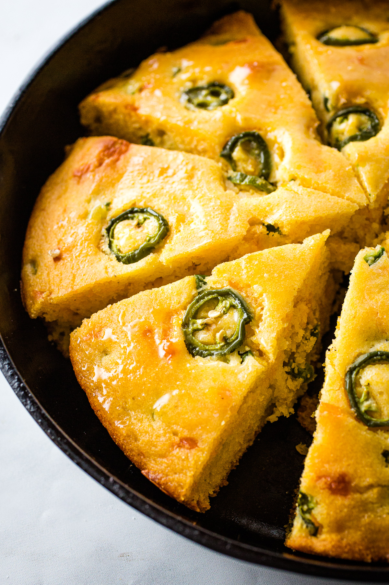

Jalapeño Cornbread

Description
This jalapeño cornbread recipe is a spiced-up riff on my regular homemade cornbread. I always love cornbread, but lately, I’ve been especially smitten with this jalapeño version. It’s tender, moist, and a little crumbly in the way that good cornbread should be. In addition to adding jalapeños, I mix in scallions and shredded cheddar cheese, making this jalapeño cornbread spicy, sweet, and savory all at once. Even Jack, who doesn’t typically like cornbread, goes nuts over this recipe. Heads up: you’ll want to save room for a second piece.
Ingredients
- Cornmeal
- All-purpose Flour
- Baking Powder
- Baking Soda
- Eggs
- Almond Milk
- Extra-virgin Olive Oil
- Maple Syrup
- Jalapeños
- Scallions
- Sharp Cheddar Cheese
- Butter
- Sea Salt
Steps
- Preheat the oven to 350°F.
- Combine the wet infredients in a medium bowl and dry ingredients into a large bowl.
- Dice the scallions and jalapeños.
- Pour the bowl of wet ingredients into the dry ingredients.
- Fold until combined.
- Stir in the scallions, jalapenõs, and cheese.
- When the batter is ready, remove the skillet from the oven.
- Add the batter to the hot skillet and tilt the pan so that it coats the bottom.
- Pour the batter into the skillet and sprinkle with reserved scallions and jalapeños.
- Return the skillet to the oven and bake for 20 - 40 minutes, or until the edges are golden brown and the top springs back to touch.
- Let the baked cornbread cool for 20 minutes before you slice and serve it.